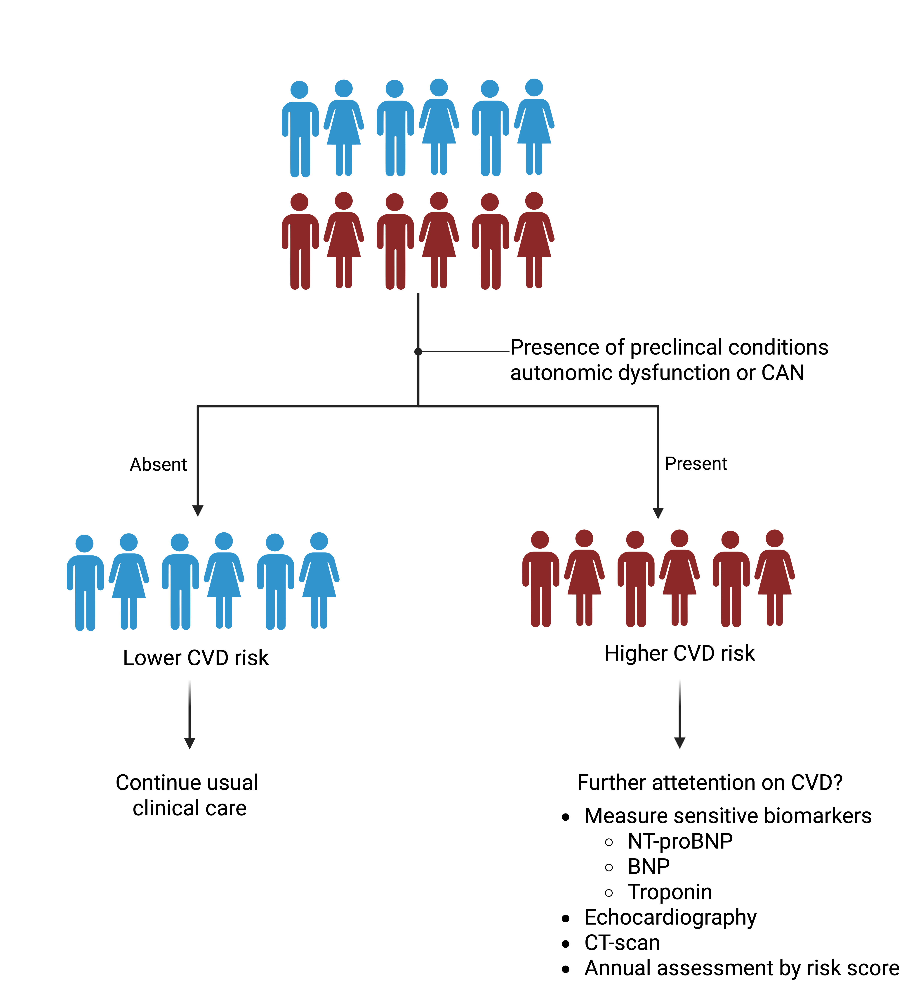

7 Perspective [needs to be fine-tuned]
7.1 Risk-stratification
Individuals with elevated glucose levels are at increased risk of developing metabolic complications and cardiovascular disease. However, many remain metabolically stable or even return to normal glucose regulation over time. As a result, structured treatment strategies for this group have not been widely adopted in clinical practice. This is partly due to the high degree of heterogeneity within this population. Therefore, additional indicators beyond glucose levels may be useful to identify those most likely to benefit from early intervention.
In Studies I and II, we demonstrated that autonomic dysfunction, as measured by long-term HRV, was more strongly associated with cardiovascular risk in this population. These findings suggest that HRV may serve as a valuable marker for identifying individuals at elevated risk who could benefit from targeted preventive strategies. Future directions include evaluating whether individuals classified as high-risk based on autonomic dysfunction respond to specific interventions. However, a limitation of long-term HRV measurement is the lack of standardization, as data are collected under free-living conditions and may be influenced by daily behaviors, potentially affecting risk classification.
From a clinical perspective, CART has been shown to be reliable non-invasive and typically takes 8 to 10 minutes to complete. In Study III, we demonstrated a relationship between CAN and cardiac dysfunction, as measured by NT-proBNP. Depsite . Heart failure is characterized by both structural and functional changes in the heart, such as left ventricular dysfunction, which can be assessed using echocardiography. However, the link between these structural and functional changes and their impact on systolic and diastolic pumping function in relation to CAN remains to be fully understood. Furthermore, the diagnostic and prognostic value of CAN, particularly its sensitivity and specificity in detecting HFrEF and HFpEF, requires further investigation.
::: {layout-ncol=“1”}  :::
7.2 Continuous monitoring of cardiovascular health
Over recent years, the use of wearable devices has increased in the general population1, enabling comprehensive data collection on behavioral (e.g., sleep and physical activity) and physiological (e.g., heart rate, ECG, temperature) parameters2. These devices offer a broader and more feasible approach to long-term heart rate monitoring, requiring less equipment and user burden compared to traditional Holter monitors. Despite growing interest in wearable-based monitoring, the integration of HRV into routine cardiometabolic risk assessment remains limited.
Studies I and II demonstrated a strong association between long-term HRV and CVD risk, with particularly pronounced associations in individuals with prediabetes and type 2 diabetes. These findings suggest that HRV metrics could serve as early indicators for stratifying individuals who may benefit from preventive interventions. In the Whitehall II study, we further showed that a steeper 10-year decline in 5-minute HRV was associated with greater aortic stiffness development over the subsequent five years3. Thus, a declining HRV trend detected by smartwatches may help identify individuals who require more intensive interventions.
In Study II, we also observed that specific morning time points were linked to CVD risk, suggesting that physiological responses captured under free-living conditions may provide valuable insights. Rather than adjusting for physical activity as a confounder, future predictive models could integrate multimodal data such as HRV, sleep, and activity patterns to capture dynamic physiological states and improve risk prediction. Incorporating HRV into digital health platforms may support personalized feedback loops, enabling timely lifestyle or therapeutic adjustments.

Hence, future studies can leverage wearable devices to continuously monitor risk by HRV and better understand the behavioral factors that contribute to its improvement or deterioration. This approach may help identify effective lifestyle patterns or medications that improve cardiovascular health through modulation of HRV.
However, standardization and transparency across different brands of wearable devices remain a challenge for both research and clinical implementation of heart rate and HRV monitoring. While smartwatches offer a convenient method for heart rate measurement, their accuracy can vary, as they rely on photoplethysmography to detect pulse rate at the wrist. This method can be imprecise under certain conditions, particularly during physical activity, due to motion artifacts and other external factors4. Despite these limitations, ongoing improvements in sensor technology and algorithm calibration are likely to enhance the reliability of wearable-derived heart rate and HRV data.
7.3 Effective causal modifiable marker
Our findings in Studies I and II support the etiological link between long-term heart rate variability and the risk of cardiovascular disease, which provide a first line of evidence of a causal relationship. However, the observed association does not imply causation, and further research is necessary to determine whether the relationship between heart rate variability and cardiovascular disease risk is indeed causal. Traditionally, epidemiological research has relied on randomized controlled trials to establish causal relationships. However, conducting such trials to isolate the direct of heart rate variability is particularly challenging. Interventions that modify heart rate variability often do so indirectly, through changes in lifestyle factors such as weight loss, inflammation, or insulin sensitivity, or through pharmacological treatments like blood pressure medications. As a result, isolating the direct modification of heart rate variability is difficult. To address these limitations, modern epidemiological approaches such as Mendelian randomization (MR)5 and structured causal mediation analysis offer promising alternatives for inferring causality from observational data [modern epidemiology 4th edition].
A genome-wide association study (GWAS) has identified 17 lead single nucleotide polymorphisms (SNPs) across eight loci associated with HRV based on short-term recordings, suggesting the potential for these variants to serve as genetic instruments in Mendelian randomization analyses6. Another study demonstrated that phenotypically measured HRV was associated with all-cause mortality but found no evidence of a genetic association between genes linked to HRV and all-cause mortality7. To date, no GWAS has been conducted to investigate the genetic determinants of long-term HRV. Establishing such genetic associations is essential for understanding its genetic architecture and for providing unconfounded estimates by using genetic variants as proxies to assess the causal role of HRV in cardiovascular disease.

A study have demonstrated that reduced HRV mediates the association between glomerular hyperfiltration and mortality8, indicating an initial potential for HRV as a modifying factor. While this has been shown in observational data, no evidence of such mediation has yet been established in trial data. The Diabetes Prevention Program (DPP) showed that HRV may modify the effect of lifestyle intervention in preventing type 2 diabetes9. However, it remains unclear to what extent this modification applies to cardiovascular outcomes, and whether the intervention was more effective among individuals with lower HRV. Cardiometabolic intervention trials, whether focused on lifestyle modification or pharmacological treatment, should, where feasible, include HRV measurements to enable structured mediation analyses and to better understand the role of autonomic function in cardiovascular outcomes. This could help demonstrate whether modification of HRV through potential strategies such as medications like beta-blockers or lifestyle interventions including physical activity, diet, and sleep has a sustainable effect on cardiovascular disease outcomes.